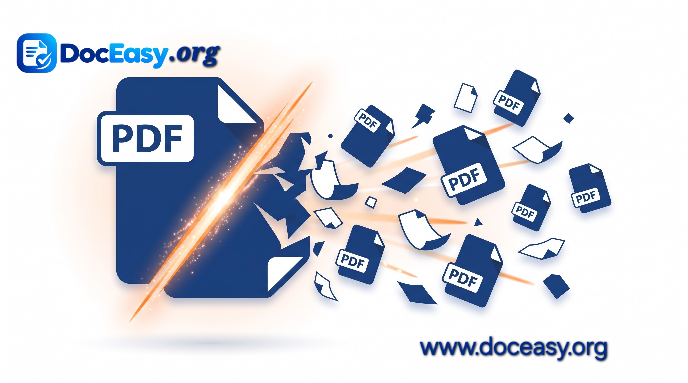

Split PDF Files Online
Extract specific pages or separate large PDF documents into individual files instantly.
Advertisement
Select or Drop a PDF File
Upload a PDF document to extract pages
Advertisement
Complete Guide: How to Split Large PDF Documents Online Free
Managing bulky academic papers, voluminous corporate contracts, or massive financial statements often requires isolating particular pages. DocEasy Split PDF enables you to break down large documents into single pages or custom page ranges instantly within your browser window without uploading confidential records to any external cloud storage.

[Place Demo Here: assets/images/pdf-split-demo.jpg]Visual sequence showing a multi-page PDF document splitting into individual separate files.
Step-by-Step Instructions:
- Step 1 - Upload PDF File: Drag and drop or browse to select your source PDF file.
- Step 2 - Choose Split Mode: Select whether you want every page individually or a custom page range.
- Step 3 - Execute Split: Click "Split PDF Now" to process locally.
- Step 4 - Download Results: Save your extracted PDF files instantly.
Why Choose DocEasy Split PDF?
- 100% Client-Side Privacy: All calculations run inside your browser sandbox.
- High Fidelity: Original text vectors, layouts, and image resolutions remain intact.
- No Installation Required: Works on mobile and desktop.
FAQ
Q: Can I split password-protected PDFs?
Currently supports unencrypted documents. Please unlock your PDF first.
Q: Are my documents saved on any server?
No. DocEasy operates entirely client-side.
Advertisement